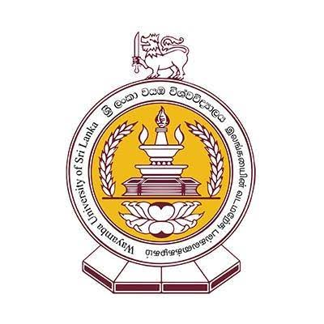

WAYAMBA UNIVERSITY OF SRI LANKA

HISTORY OF WAYAMBA UNIVERSITY
- 1999: Established as the 13th national university in Sri Lanka.
- 1999: Formed by combining the Wayamba Affiliated University College and Affiliated University College of NWP.
- 2000: Formally inaugurated with main campuses located at Kuliyapitiya and Makandura.
- Present: Developed into a leading university offering specialized programs in Agriculture, Applied Sciences, and Management.
AVAILABLE FACULTIES
- Faculty of Agriculture and Plantation Management – කෘෂිකර්ම හා වගා කළමනාකරණ පීඨය
- Faculty of Applied Sciences – අනුප්රයුක්ත විද්යා පීඨය
- Faculty of Business Studies and Finance – ව්යාපාර අධ්යයන හා මුදල් පීඨය
- Faculty of Livestock, Fisheries and Nutrition – පශුසම්පත්, ධීවර හා පෝෂණ පීඨය
- Faculty of Medicine – වෛද්ය පීඨය
- Faculty of Technology – තාක්ෂණවේද පීඨය
- Faculty of Graduate Studies – පශ්චාත් උපාධි අධ්යයන පීඨය
GO TO OFFICIAL WEBSITE OF WAYAMBA UNIVERSITY
GO TO HOME PAGE